Setup Yomitan di PC LazyGuide¶
- Yomitan adalah kamus pop up untuk berbagai bahasa
- Dipakai buat
miningkeAnki - Setup di tutorial ini menggunakan tipe catatan (Note Type) Lapis
- Yomitan Light | Dark Mode (CSS)
{kind=link}
{kind=link}
Unduh dan Pasang¶
-
Pasang Yomitan buat Chrome/Edge atau Yomitan buat Firefox
-
Download dari sini:
Fontkamus yomitanlazyGuide-yomitan-settings(download dua-duanya)- Firefox/Brave:
yomitan settingsdi sini
- Firefox/Brave:
- Tambahan kamus JIDict dan JMDict Trilingual JP-EN-ID
- Setelah download:
- Ekstrak (?)
Font.7zdanyomitan dictionary.7z(Pass:lazyguide) yomitan dictionary.7zcuma perlu diekstrak 1x,jangan ekstrak isi dictionary-nya
- Ekstrak (?)
Setup¶
-
Di halaman awal
Yomitan, scroll ke bawah >Permissions page> aktifkanclipboardReaddannativeMessagingTekan tombol
Permission Pagedi halaman izin Yomitan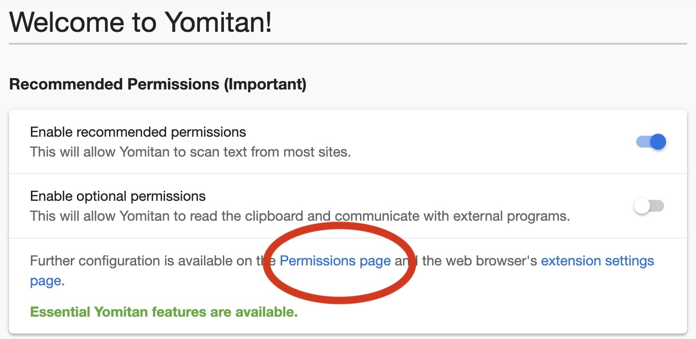
Tekan tombol
Permission Pagedi halaman izin Yomitan.Beri Izin Yomitan
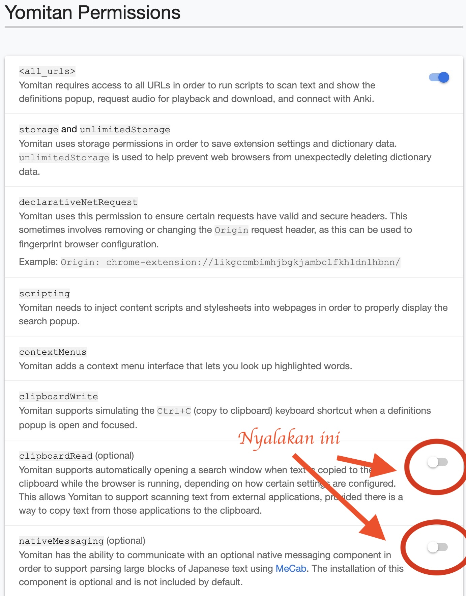
aktifkan
clipboardReaddannativeMessagingdi bawah. -
Buka
chrome://extensionsatauedge://extensionsatauabout:addons(Firefox), terus buka pengaturan ekstensiYomitan -
Pastikan:
- Chrome/Edge: aktifkan
Allow access to file URLs - Firefox: aktifkan
Access your data for all websites
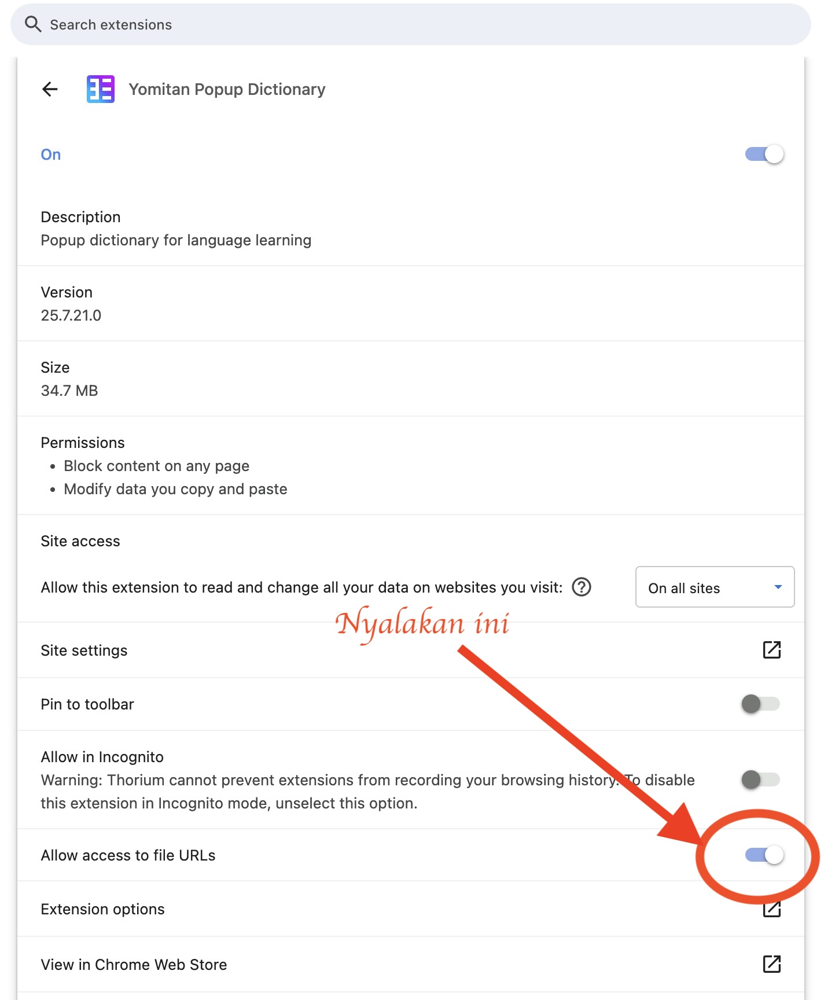
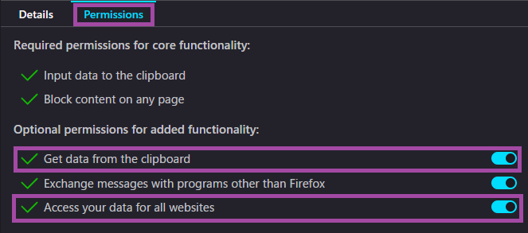
- Chrome/Edge: aktifkan
-
Instal
Fontsdengan buka file-nya dari folderFont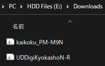
-
Masuk ke halaman setting
Yomitan(klik ikon ekstensi > klik ikon gir)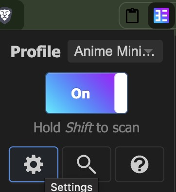
-
Buka
Dictionaries>Configure installed and enabled dictionaries...>Import- Import semua kamus dari folder
yomitan dictionary(bisa pilih semuanya sekaligus) - Aktifkan semua kamus
- Taruh
JIDict,Jitendex, atau kamus lain yang kamu mau di paling atas (priority #1) 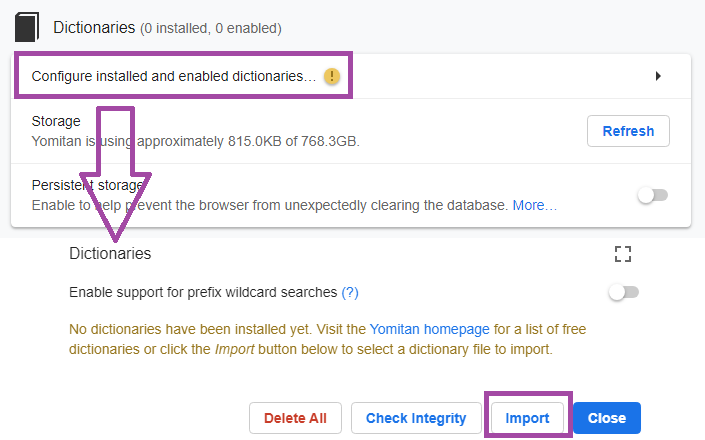
- Import semua kamus dari folder
-
Scroll ke bawah ke bagian
Backup>Import Settings> pilihlazyGuide-yomitan-settings(yang udah didownload dari sini)-
Pilih salah satu:
lazyGuide-local-audio-yomitan-settings(butuh: Yomitan Local Audio)lazyGuide-non-local-audio-yomitan-settings
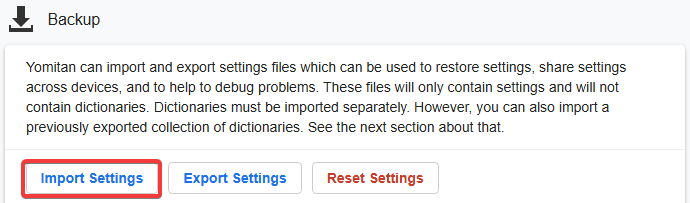
-
-
Pilih active profile
-
Pilih
Monolingualsebagaiactive profile, bisa sambil tahan tombol Alt (Win)/Option (MacOS) sambil hover buat ganti keMonolingual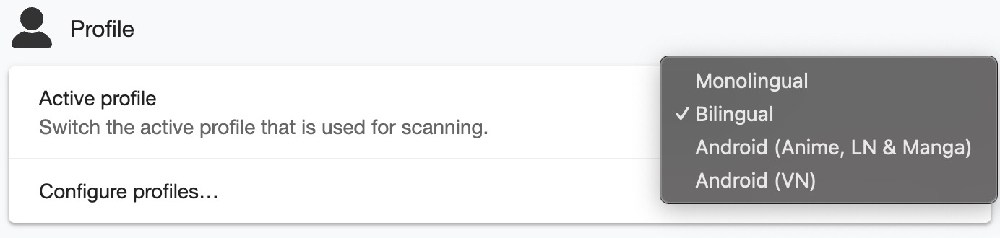 -
Buka pengaturan
Anki, lalu keConfigure Anki flashcards...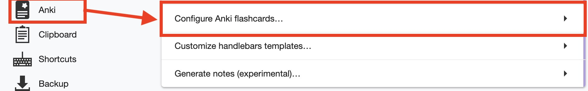 -
Ganti bagian
MainDefinitionke{single-glossary-jidict-v101}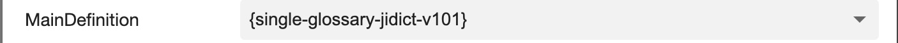
-
Lakukan juga langkah ke 8 ini ke profil
Bilingual
-
-
Sekarang kamu udah bisa hover kata-kata!
- Buat ganti hotkey, buka
Yomitansettings >Scanning>Scan modifier key
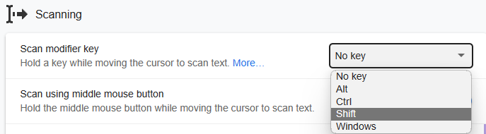
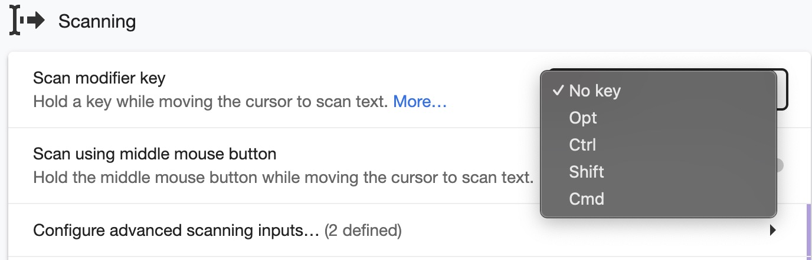
- Buat ganti hotkey, buka
Setup Yomitan di PC udah kelar! Mau lanjut cek panduan Setup Mining Anime?
Lanjut ke Setup Mining Anime di PC
Kalau ada masalah, cek bagian Pertanyaan Umum
Info Tambahan dan Tips¶
Info 1: Yomitan Local Audio¶
Yomitan Local Audio (klik di sini)
- Cek source buat info dan update terbaru
- Ini bisa makan waktu sekitar sejam, butuh Anki versi 2.1.50+
- Versi Android juga ada tapi setup PC ini wajib karena butuh generate audio dulu
-
Download semua dari link ini. Baca pelan-pelan panduannya. Download audio jepang aja kalau ga butuh audio bahasa lain.
-
Di dalam
Anki: tekan CtrlShift + A untuk Windows, CmdShift + A untuk MacOS, atauTools>Add-ons>Get Add-ons...> masukin1045800357> restartAnki -
Ekstrak
local-yomitan-audio-collectionlalu paste folderuser_fileske:- Di
Add-ons window> pilihLocal Audio Server for Yomitan>View Files - Atau ke:
- Windows:
C:\\Users\\NamaKamu\\AppData\\Roaming\\Anki2\\addons21\\1045800357 - MacOS :
/Users/macbookair/Library/Application Support/Anki2/addons21/1045800357
- Windows:
- Di
-
Kalau pakai setting-ku:
- Buka
Yomitan settings>Audio>Configure audio playback sources...>Add>Custom URL (JSON) - Paste
http://localhost:5050/?term={term}&reading={reading}dan taruh paling atas
- Buka
-
Cek apakah udah jalan:
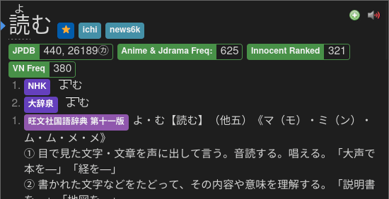
SELESAI
Info 2: Mode Terang/Gelap Yomitan¶
Mode Terang & Gelap Yomitan (klik di sini)
Buat ganti tema, buka Yomitan settings > Appearance > Theme
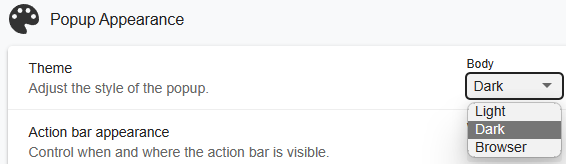
Pertanyaan Umum¶
Pertanyaan 1: Boleh nambah/menghapus kamus Yomitan pilihanku sendiri?¶
Boleh nambah/menghapus/mengedit kamus Yomitan? (klik di sini)
-
Silakan, mayoritas kamus yang formatnya Anki kompatibel, tinggal lakukan langkah ke 6 di bagian setup
-
Kamu juga bisa edit di bagian
Yomitan settings>Anki>Configure Anki card format...>MainDefinition> pilih dari dropdownsingle-glossary-YANG-KAMU-MAU -
Kalau ganti
MainDefinition, kamu harus edit tiapProfile
Pertanyaan 2: Cari kamus lainnya di mana?¶
Cari kamus lainnya di mana? (klik di sini)
- Kamu bisa cek koleksi kamus lain di koleksi Shoui dari TMW atau koleksi Marv dari Yomitan
Pertanyaan 3: Rekomendasi Kamus Frequency?¶
Rekomendasi Kamus Frequency? (klik di sini)
- JPDB
- Merupakan daftar frekuensi yang diambil dari jpdb.io, sebuah situs yang menganalisis banyak light novel, visual novel, anime, dan J-drama. Jadi, daftar ini merefleksikan seberapa sering kata muncul dalam media fiksi berbahasa Jepang.
- CC100
- Merupakan daftar frekuensi dari data korpus internet Jepang. Kata-kata formal akan tampak lebih umum dalam daftar ini.
- Contoh: 審議会 (council) memiliki peringkat ke-9733 di CC100, tetapi ke-58730 di JPDB.
Pertanyaan 4: Apa yang dimaksud dengan "kata umum"?¶
Apa yang dimaksud dengan "kata umum"? (klik di sini)
- Sangat umum: 1–10.000
- Umum: 10.001–20.000
- Cukup umum: 20.001–30.000
- Agak jarang: 30.001–40.000
- Jarang: 40.001–50.000
- Sangat jarang: 50.001–80.000
- Tingkat yang mungkin tidak dikenal penutur asli: 80.000+
Pertanyaan 5: Kapan kamus di-update? Harus update sendiri?¶
Kapan kamusnya di-update? Perlu update sendiri gak? (klik di sini)
- Aku jarang update. Santai aja, kontennya jarang berubah kok
- Tujuan panduan ini biar stabil dalam jangka panjang
- Tapi kalau mau ngejar update sendiri juga boleh
Pertanyaan 6: Gimana cara pakai sentence card?¶
Cara pakai sentence card? (klik di sini)
- Masuk
Yomitan settings>Anki>Configure Anki card format...
- Di bagian
Expression, scroll ke bawah, cariIsSentenceCarddan isi1

- Terapkan ke semua profil termasuk
Monolingual,Bilingual,Android (Anime, LN & Manga), danAndroid (VN)